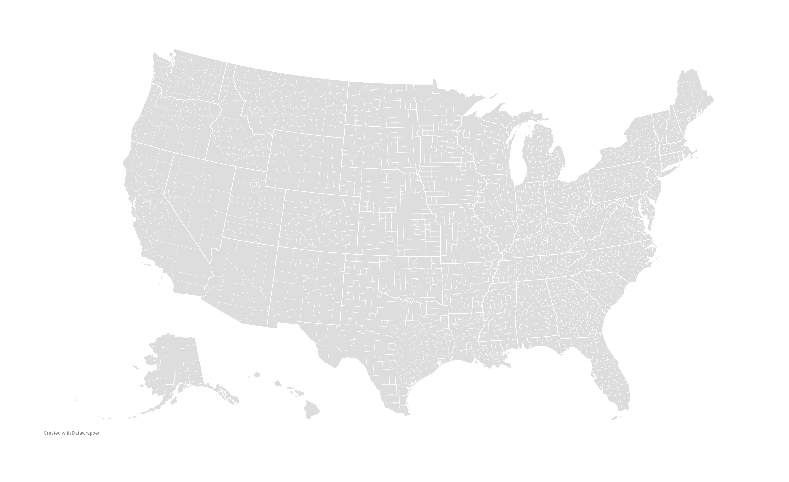
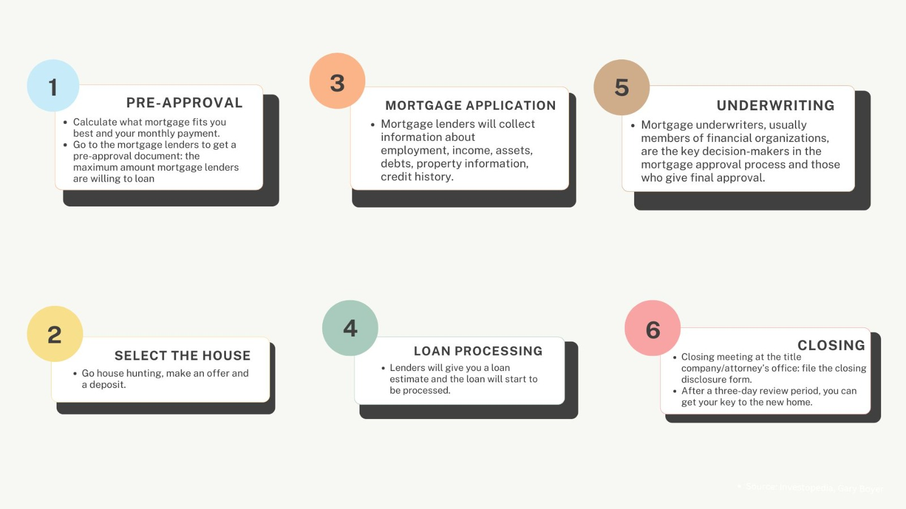

Lack of data on sexual orientation and gender identity obscures
LGBTQ+ housing disparities
Same-sex couples have more difficulties getting a loan for a house, according to an
analysis of Home Mortgage Disclosure Act data. They are more likely to be denied or quoted at higher
interest rates. But the lack of data collection on the LGBTQ+ community makes it almost impossible to
get the full picture of the challenges they face.
In 1990, same-sex borrowers were 73% more likely to be rejected for a mortgage in Boston, according to an
analysis of the Boston Fed data. At the time, ten US states criminalized what they called “consensual
sodomy.”
Today, same-sex couples can get married. Mortgage discrimination based on sexual orientation is illegal
following Executive
Order 13988. Buying a house should be as easy for them as for heterosexual couples. But
discrimination against same-sex couples in housing remains.
We analyzed HMDA data — the most comprehensive source of information about the US mortgage market — and found
that in 2022, same-sex borrowers were 32.4% more likely to be rejected when applying for a mortgage than
different-sex borrowers with similar demographic characteristics — like race. Same sex applicants in
democratic states are also more likely to get a mortgage than in republican states.

HMDA data includes mortgages filed within the entire country. The 2022 data includes more than 15
million cases.
Within the database, we observed mortgage cases filed by same-sex borrowers. While Los Angeles
and Chicago have the most cases, many cases can also be observed in Washington,
Tri-State area, New England, South Florida, and emerging Texas cities.
These cases are observed in 3/5 of U.S. counties, according to our methodology*.
However, our analysis of HMDA data shows more than 2/3 of such counties have lower approval rate
for observed same-sex borrowers.
Houston, TX, for example, had more than 260 such borrowers in 2022 - one of the
highest in the country. However, their average approval rate is 10% less than borrowers with
similar demographic characters.
- Housing rights for LGBTQ
community in the U.S. -
Systemic discrimination in housing has existed for a long time. When Congress passed the Fair Housing Act in
1968, it was a landmark decision. For the first time, lenders and other housing professionals couldn’t
discriminate against people based on race, color, religion and national origin anymore. Six years later, a
new category was added: sex. But back then, it had nothing to do with sexual
orientation or gender identity.
Each of these timestamps constituted steps forward for the housing rights of the LGBTQ+ community nationwide.
In 2021, sexual orientation became part of the categories protected by the Federal Housing Act. Same-sex
couples who believe they faced discrimination can file complaints to the US Department of Housing and Urban
Development. But at the state level, nondiscrimination laws vary.
Same-sex couples are not protected by
their state law everywhere.
- Why HMDA data fails to account for LGBTQ+
communities -
Journalists and researchers who want to study discrimination based on sexual orientation or gender identity
in mortgages often turn to the HMDA data, one of the few datasets publicly available.
Congress enacted the Home Mortgage Disclosure Act in 1975. It requires financial institutions to keep data
and records about their lending activity and to report and publicly disclose this information every year
through the Consumer Financial Protection Bureau (CFPB).
HMDA data is collected to ensure transparency in lending and identify when discrimination could be happening.
But it doesn’t include enough information to verify whether members of the LGBTQ+ community are treated
fairly.
In 2019, Hua Sun and Lei Gao, two researchers from Iowa State University, decided to look into lending
practices for same-sex borrowers based on the HMDA data. They suggested a method to infer the sexual
orientation of a couple by looking at whether one’s sex matches with the co-applicant’s – if it’s the same,
then this is a same-sex couple. They found that from 1990 to 2015, the approval rate for same-sex couples
was 3.8% lower than for heterosexual couples nationwide.
“Even a 1% difference is quite significant,” Sun said. “It can mean a lot.”
Approval rate in 2022 for same-sex couples to get mortgages in home buying* by
U.S.
counties
Results:
Number of Mortgage Cases with Same-sex Borrowers:
Approval rate of same-sex borrowers:
Approval rate of borrowers with similar demographic character:
*Data Source: HMDA Data, 2022. While the public dataset does not
capture sexual orientation, our analysis
includes inferred cases of borrowers and co-borrowers of the same sex but different races. The term
"borrowers with similar demographic characteristics" refers to individuals of different racial
backgrounds
and different sexes. Approval rates encompass "loan initiated," "approved but not accepted," and
"denied"
statuses, with the first two categories classified as "approved." For details of our study, please refer
to
the methodology section.
But Sun also acknowledged that even though their results hinted at unfair lending, their analysis lacked
important information, like credit scores, or explicit information about a couples’ sexual orientation.
There was no way to tell for sure.
When we looked at the 2022 HMDA data, we also saw a gap in approval rates for same-sex couples and
heterosexual couples, even after controlling important variables in the data. But like Sun and Gao, we’re
missing key details to identify whether discrimination is going on.
“I will perhaps issue a general caution on HMDA data,” a CFPB spokesperson told us. “It provides a signal of
risk, but not proof of discrimination, especially if you’re using the public data, which doesn’t include
important variables like credit score. It is not evidence of illegal action.”
The CFPB strips credit scores from the public dataset because of the mortgage industry’s lobbying efforts,
quoting borrower privacy reasons, The Markup wrote in a story
about racial bias in mortgage-approval
algorithms.
At the moment, the CFPB has no plans to include information about the sexual orientation or gender identity
of its borrowers in the HMDA data.“It’s a multi-year process. It takes an enormous effort, both from the
Bureau and the industry to implement,” the spokesperson said.
This year, a new study published in
Social Science Research Network using confidential administrative data —
including credit scores and the age of borrowers — found that same-sex couples were 8.8% more likely to be
denied a mortgage than heterosexual couples in the U.S. from 2018 to 2021. Same-sex couples also had to pay
0.8% more in interest rates than others.
In addition, researchers found that same-sex couples were 53.9% less likely to pay back the loan than
heterosexual
couples. They thought this might explain some of the observed differences in mortgage approval. Instead of
Sun and Gao, who used race as a filter, they only looked at applicants whose age difference was less than 25
years, to make sure they didn’t include family members buying a house together.
- Why are LGBTQ+ people at a disadvantage when
applying for mortgages -
Gary Boyer, a mortgage broker who created his own company called Mortgage Monkey to serve the LGBTQ+
community, believes that the reason why same-sex couples are less likely to obtain a loan for their house is
implicit bias.
“A lot of times, people don’t realize that they’re being discriminatory,” he said. “It’s not like Bank of
America runs around and says, ‘We don’t wanna deal with homos.’”
After an applicant submits their documents to a financial institution, the underwriter, who assesses risks of
the mortgage application, gives a final approval or denial.
“I have definitely seen underwriting discrimination. But it’s not ‘because they’re gay or lesbian.’ Instead,
it’s rather: ‘Why are they doing this? Why don’t they have that?’ It’s because not everything in their life
is exactly heteronormative. Why don’t they have a joint credit? Why is the lease to prove a rental history
only in one person’s name?”
Today, the underwriting process can be automated. A computer analyzes risks based on the borrowers’
information to make a final decision. Some lenders use it to help human underwriters while others depend on
it entirely. Analyses have shown that mortgage-approval algorithms could treat people of color unfairly.
This can happen because algorithms rely on historical data, which can reflect past discriminatory practices,
leading to biased outcomes against certain groups.
The disparity the data shows is only the tip of the iceberg. There’s been no study to investigate the reasons
behind it. And there’s more to discriminatory patterns against LGBTQ+ communities that the data cannot
capture, according to industry experts.
Boyer said that 8 to 10% of the clients he works with come to him after having a bad experience with certain
financial institutions due to their sexual orientation. But most of this wouldn’t appear in the
HMDA data.
“A lot of the discrimination in my industry is when LGBTQ+ people are encouraged not to apply,” Boyer said.
“Somebody makes them feel uncomfortable and unwelcome. I find that often, people are traumatized by the
experience and it sometimes takes them years before they come back and do it again.”
Boyer explained that lenders could sometimes be openly discriminatory, either by saying “we don’t want your
kind here,” or by refusing to acknowledge a same-sex couple’s relationship: “your roommate’s income doesn’t
count.” As a consequence, same-sex couples can be pushed to either apply as a single applicant, which
undermines their chances of getting a mortgage, or not apply at all. Sometimes, lenders tell them they
wouldn’t qualify.

Lenders can make assumptions on applicants’ gender identity and sexual orientation, either when
they come in person, or through personal file.
Some LGBTQ+ people get discouraged from applying because of discriminatory comments.
Sexual orientation or gender identity doesn’t appear on the mortgage application file, but “sex”
does. Marital status is not mentioned.
Here, it's either implicit bias from the underwriter or the couple is at a structural
disadvantage.
Discrimination against same-sex couples in housing starts in high school, according to David Siroty, a
representative of the LGBTQ+ Real Estate Alliance. Early discrimination based on someone’s gender identity
or sexual orientation and lack of family support can impact one’s grades, ability to go to college, ultimate
income, and ability to obtain a good credit score when applying for a mortgage.
Like Boyer, Siroty believes that discrimination against same-sex couples in the mortgage industry is due to
unconscious bias. He also explained that a part of the LGBTQ+ community, especially trans people, sometimes
struggle during mortgage applications because of name changes — when their name doesn’t match the one that’s
written on their official documents if they didn’t update it on paper beforehand — or because of their
pronouns.
Samantha Fornari, a trans woman, changed her name in 2021, and wanted to buy a house at the end of 2023. She
updated her name with the Social Security Administration and on her birth certificate, but not with the
credit bureau. After she applied for a mortgage pre-approval at Dearborn Federal State Bank, she received a
phone call from the bank. They were unable to obtain her credit report from Equifax for “security reasons”
and couldn’t accept her application.
“They sent me an email with a picture showing the actual error. It showed the applicant file was potentially
fraudulent or misused,” Fornari said.
There’s been limited enforcement actions regarding discrimination against same-sex couples. Lenders can make
assumptions about people’s sexual orientation or gender identity based on their application. In Samantha’s
case, she knows they could’ve guessed.
“I wouldn’t have any other reason to change my name,” she said. On the phone, she also felt that her voice
“wasn’t the most feminine.”
But the mortgage application doesn’t explicitly require information about an applicant’s gender identity or
sexual orientation. There’s no data about it in the HMDA. Proving discrimination is almost impossible.
- Methodology -
To investigate the disparity of same-sex borrowers, we used the Home Mortgage Disclosure Act (HMDA) data,
which is a comprehensive source of publicly available information on the U.S. mortgage market. The 2022
dataset includes more than 15 million applications.
While the HMDA data doesn’t include information about applicants’ sexual orientation, we attempted to infer a
couples’ sexual orientation based on the disclosure of the sexes of the borrower and co-borrower in the
data. To make sure we wouldn’t accidentally include family members or relatives, we’re only looking at cases
in which the two borrowers are from different races, a technique suggested by Sun and Gao (2019).
As we ran a multivariate analysis on the national model for conventional applications, the following
variables were considered:
Race
Sex
Whether the application had a co-applicant
Age
Income
Loan amount
Property value
Mortgage term
Credit model used
Debt-to-income ratio
Combined loan-to-value ratio
The automated underwriting system used
The ratio between the median income of the census tract where the property is located and the median
income of the metro area
Percentage of inferred same-sex couples of the county where the loan was issued (added variable to HMDA
data)
When holding the independent variables constant against the dependent variable of being approved or denied a
mortgage, we found that lenders are more likely to deny cases filed by applicants with same sex.